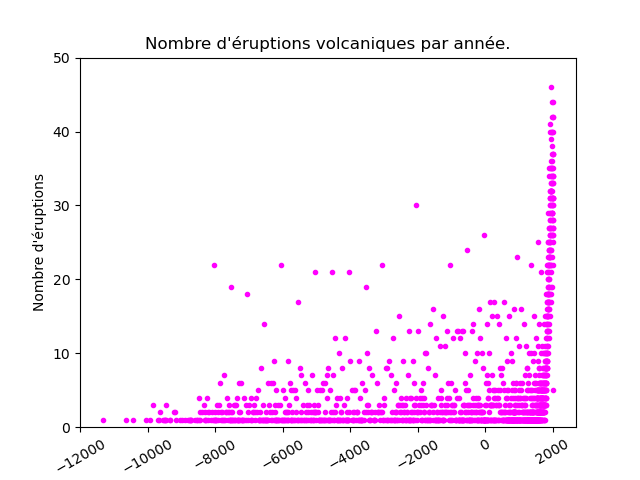

Correction du contrôle 1
Science des données 2
L3 MIASHS, 16 octobre 2023
Tout document autorisé
Durée : 1h45
Concernant les commandes python à effectuer pour répondre aux questions, il n'y a pas une et une seule bonne réponse aux questions. J'en indique une.
Énoncé
Nous allons étudier un jeu de données qui contient de nombreuses éruptions volcaniques connues s'étant déroulées dans les 14000 dernières années. Les données sont ordonnées de l'éruption la plus récente à la plus ancienne.
Ce fichier est disponible à l'url https://philippe-preux.github.io/ensg/miashs/datasets/eok.csv.
Pour chaque éruption, le jeu de données indique :
- le numéro du volcan concerné ;
- le nom du volcan ;
- le numéro d'éruption ;
- le type d'éruption ;
- la zone d'activité du volcan ;
- l'indice d'explositivité de l'éruption (Volcanic explosivity index) ;
- la date de début d'éruption ;
- la méthode utilisée pour dater l'éruption ;
- la date de fin de l'éruption ;
- la latitude du volcan ;
- la longitude du volcan ;
- le pays où est situé le volcan.
Les questions :
- quelle commande effectuez-vous pour charger le jeu de données ? Faites-le et indiquez-la dans le compte-rendu.
eok = pd.read_csv ("https://philippe-preux.github.io/ensg/miashs/datasets/eok.csv") - Quelle commande effectuez-vous pour connaître le nombre de données contenues dans ce jeu de données ? Indiquez ce nombre dans le compte-rendu.
eok.shape [0] # 9559
- Quelle commande effectuez-vous pour connaître le nombre d'attributs décrivant les données ? Indiquez ce nombre dans le compte-rendu.
eok.shape [1] # 16
- Quelle commande effectuez-vous pour obtenir la liste de ces attributs ? Indiquez cette liste dans le compte-rendu.
list (eok) # ['volcano_number', 'volcano_name', 'eruption_number', 'eruption_category', 'area_of_activity', 'vei', 'start_year', 'start_month', 'start_day', 'evidence_method_dating', 'end_year', 'end_month', 'end_day', 'latitude', 'longitude', 'country']
- Quelle commande effectuez-vous pour obtenir l'année où a eu lieu l'éruption la plus ancienne enregistrée dans ce jeu de données ? Indiquez cette année dans le compte-rendu.
min (eok["start_year"]) # -11345
- Quelle commande effectuez-vous pour obtenir le pays dans lequel a eu lieu cette éruption ? Indiquez ce pays dans le compte-rendu.
eok.loc [eok ["start_year"] == min (eok["start_year"]), "country"] # Chile
- Quelle commande effectuez-vous pour connaître le nombre d'éruptions qui ont eu lieu dans chaque pays ? Indiquez-la dans le compte-rendu.
>>> eok["country"].value_counts () Japan 1653 Indonesia 1297 United States 1025 Russia 822 Chile 521 ... Ethiopia-Djibouti 1 Colombia-Ecuador 1 Mongolia 1 Iran 1 Saint Lucia 1 Name: country, Length: 76, dtype: int64 - Quelle commande effectuez-vous pour connaître le pays qui a enregistré le plus grand nombre d'éruptions ? Indiquez le pays et le nombre d'éruptions dans le compte-rendu.
On a obtenu la réponse avec la commande précédente : Japon, 1653 éruptions.
- Quelle commande effectuez-vous pour connaître le nombre d'éruptions qui se sont déroulées en France ? Indiquez ce nombre d'éruptions dans le compte-rendu.
eok [eok.country == "France"].shape[0] # 285
- Quelle(s) commande(s) effectuez-vous pour connaître les années de la plus ancienne et la plus récente éruptions qui se sont déroulées en France ? Indiquez ces deux années dans le compte-rendu.
On peut taper la commande :
eok.start_year [eok.country == "France"]
et lire la réponse. Ou bien, on peut taper les deux commandes :
eok.start_year [eok.country == "France"].head(1) eok.start_year [eok.country == "France"].tail(1)
qui donnent juste les réponses attendues (2020 et -8210).
- La célèbre éruption du Vésuve qui a detruit Pompeï est-elle dans le jeu de données ? Elle a eu lieu en 79 et en anglais, le volcan s'appelle "Vesuvius". Quelle commande tapez-vous pour répondre à cette question ? Si l'éruption est présente, indiquez le numéro de la donnée correspondante (le numéro de la ligne dans le jeu de données).
eok [(eok.start_year == 79) & (eok.volcano_name=="Vesuvius")]
numéro 7480.
- Quelle commande effectuez-vous pour obtenir le nombre d'éruptions volcaniques dans le monde depuis 2000 ? Indiquez ce nombre dans le compte-rendu.
eok [eok.start_year > 2000].shape[0] # 615
- Quelle commande effectuez-vous pour réaliser un graphique de la répartition des éruptions dans le monde (en fonction de la longitude et de la latitutde du volcan), autrement dit, cette figure :
eok.plot.scatter (x="longitude", y = "latitude", title = "Position des éruptions volcaniques connues.", xlabel = "Longitude", ylabel = "Latitude", s = 1)

Insérez la figure que vous avez réalisée dans le compte-rendu. Comment faites-vous pour ajouter un point rouge indiquant la position de Greenwich (longitude = 0, latitude = 51°28'44") ? Faites-le.

Insérez cette autre figure dans le compte-rendu.eok.plot.scatter (x="longitude", y = "latitude", title = "Position des éruptions volcaniques connues.\nGreenwich indiqué par un point rouge", xlabel = "Longitude", ylabel = "Latitude", s = 1) plt.plot (0,51+28/60+44/3600,'ro',color="red")
- Les attributs start_year, start_month, start_day indiquent la date de début de l'éruption. Les attributs end_year, end_month, end_day indiquent la date de fin.
Ajouter un attribut duration au jeu de données qui contient la durée de l'éruption. Quelle commande tapez-vous pour réaliser cela ?Je décompose le calcul en commençant par calculer les dates de début et de fin des éruptions et ensuite, je fais la différence.
eok["debut"] = pd.to_datetime (pd.DataFrame ({"year": eok.start_year, "month": eok.start_month, "day": eok.start_day}), errors = "coerce") eok["fin"] = pd.to_datetime (pd.DataFrame ({"year": eok.end_year, "month": eok.end_month, "day": eok.end_day}), errors = "coerce") eok ["duration"] = eok["fin"] - eok ["debut"] - Pour que vous ne soyez pas bloqué pour la suite, si vous ne savez pas résoudre la question précédente, vous pouvez charger le fichier qui contient cet attribut à l'url https://philippe-preux.github.io/ensg/miashs/datasets/eok+duration.csv.
Quelle commande effectuez-vous pour connaître la plus longue éruption connue de l'histoire ? Où s'est-elle déroulée ? Est-elle terminée ? Combien de temps a-t-elle duré ? Vous indiquez la réponse à ces questions dans le compte-rendu.max (eok.duration)
Elle s'est déroulée au Vanuatu, et s'est terminée le 17 avril 2020. Elle a donc duré 89774 jours, soit environ 246 ans.
- Au graphique précédent, ajouter la position de ce volcan en orange. Insérer cette nouvelle figure dans votre compte-rendu ;
eok.plot.scatter (x="longitude", y = "latitude", title = "Position des éruptions volcaniques connues.\nGreenwich indiqué par un point rouge", s = 1, xlabel = "Longitude", ylabel = "Latitude") plt.plot (0, 51+28/60+44/3600, "ro", color="red") plt.plot (eok.longitude [eok.duration==max(eok.duration)], eok.latitude [eok.duration==max(eok.duration)], "ro", color = "orange")
- Pour quel volcan a-t-on le plus d'éruptions connues ? Dans quel pays est-il situé ? Combien y en a-t-il ? De quand date la plus ancienne ?
eok.volcano_name.value_counts() eok [eok.volcano_name == "Etna"].country eok.start_year [eok.volcano_number == 211060].tail(n=1)
Il s'agît de l'Etna (1ère commande), situé en Italie (deuxième commande). 241 éruptions (1èere commande), la plus ancienne en -6190 (troisième commande).
- Combien d'éruptions dans la "Chaine des Puys" (utilisez ce nom pour le volcan) sont connues ? Quelle est l'année de la plus récente ?
eok.start_year [eok.volcano_name == "Chaine des Puys"]
8 éruptions, la plus récente en -4040.
- Combien y a-t-il d'éruptions en moyenne chaque année depuis 1900 ? Faire un graphique de ce nombre au fil des années, de 1900 à 2020 comme celui-ci :

Insérez-le dans le compte-rendu.nb = eok.start_year [(eok.start_year >= 1900)&(eok.start_year < 2020)].value_counts() nb.sort_index().plot(linestyle = "--", marker = "o", color = "magenta", xlabel = "Année", ylabel ="Nombre d'éruptions", title = "Nombre d'éruptions volcaniques par année.") plt.show()
- Faire le même graphique pour les années comprises entre 0 et maintenant. Insérez-le dans le compte-rendu. Que constatez-vous ? Pensez-vous que cela reflète la réalité ?
On obtient ce graphique :

Le graphique montre qu'avant le XIXè siècle, il y a peu d'éruptions. En fait, la réalité est qu'il y a peu d'éruptions connues, pas qu'il n'y en a pas eu. Donc, ce graphique représente la réalité de ce qui est connu, pas la réalité de ce qu'il s'est passé. Il n'y a aucune raison de penser que le nombre moyen d'éruptions volcaniques a varié depuis l'an 0.